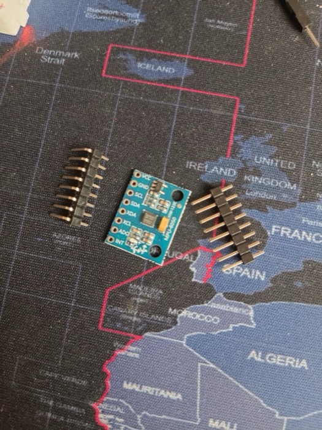
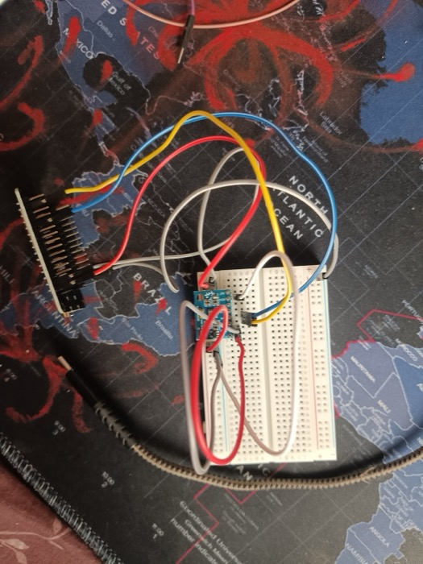
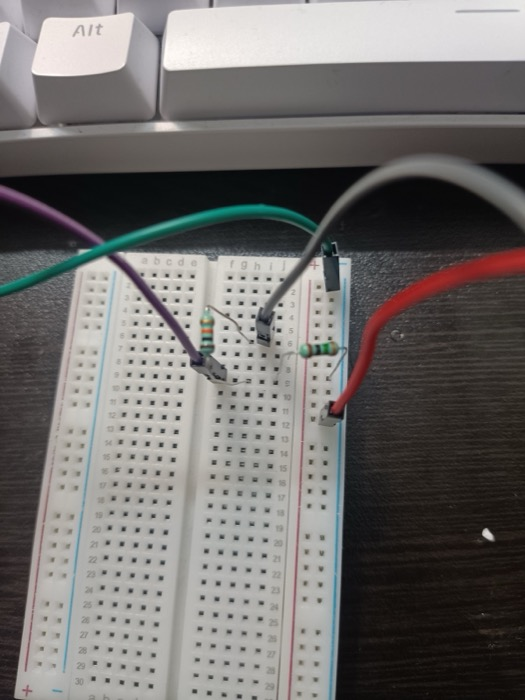
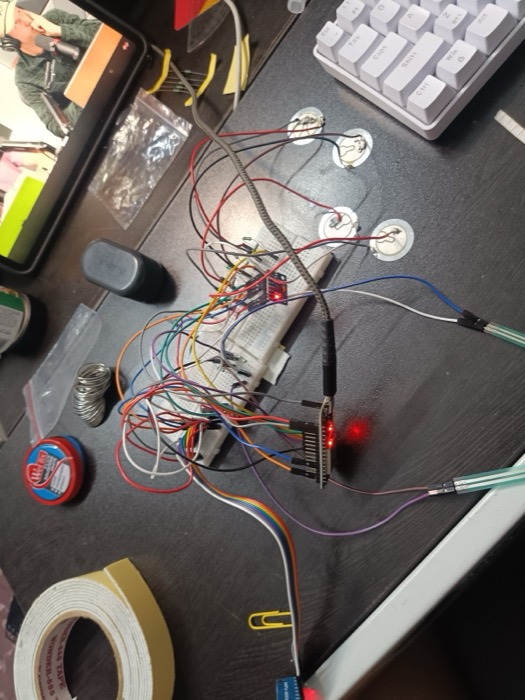

Every day of work so far, from the phone-camera experiments (PhoneStereo, 19 Oct – 4 Nov) to the sensor wristband (WristTap, 14–15 Nov). All the numbers come from the session logs, result files and test recordings saved on the Mac.
| 1 | Timeline: all days | 2 |
| 2 | Phone stereo cameras: mat piano and StickyBeat | 3 |
| 3 | Three-camera sign study and phone touch screen study (3 Nov) | 4 |
| 4 | SurfaceTouch projector test day (4 Nov) | 5 |
| 5 | AI depth test and Touch Stage (4 Nov) | 6 |
| 6 | Research without cameras: sonar, radar, physics limits (4–15 Nov) | 7 |
| 7 | WristTap build log (14–15 Nov) | 8 |
| 8 | WristTap test results and photos | 9 |
| 9 | Options compared and budget (15 Nov) | 10 |
| 10 | Where it stands, next steps, files and repos | 11 |
Earlier camera-based gesture projects are listed first, because their tools (Apple Vision, MediaPipe, phone sensors) fed into this work.
The idea: the phone's two back lenses see the hand from two slightly different places, so the shift between them gives depth. Facts checked on the phone over USB:
| Fact | Value | What it meant |
|---|---|---|
| Camera IDs | 5 (main, front, ultra-wide, macro, logical 4) | ID 4 = main + ultra-wide as one device |
| Distance between lenses | 1.0 cm (factory calibration) | Good depth only within about 1–1.5 m |
| Both lenses at once | 1280 × 960, about 18 fps each (24 fps in the live viewer) | Paired frames share exact timestamps |
| Depth matching (SGBM) | about 10 ms per pair at 640 px wide | Fast enough for live use |
| 3 back cameras together | Impossible (each camera uses 100 of 100 resource units) | Third view = Mac camera |
| Normal apps | Xiaomi hides the extra cameras | Streamer runs as the shell user (adb, later Shizuku) |
Phone low at the far side of a desk mat. 4 fingertip corners map the mat. 8 white + 5 black keys. The touch line sits halfway between "on the mat" and "lifted" heights from the last 30 s.
| Measured | Rest | Lift |
|---|---|---|
| Single finger (px) | 5–8 | 12–19 |
| Chords (px) | ~1 | ~5 |
| Noise (px) | about 0.8 | |
Chords were too close to the noise. This was the first sign that small depth gaps are hard to see with a 1 cm lens gap.
| Setup | Cues recognised | Settled frames correct | Extra delay |
|---|---|---|---|
| Mac camera | 94% | 85% | +0 ms |
| Phone back pair | 89% | 78% | +80 ms |
| All three, learned fusion | = Mac | −0.1 pts (95% CI −0.3 to 0) | +0 ms |
| Phone front camera (follow-up, dim light) | 100% | 89.4% vs Mac 76.4% | +40 ms |
| Front + Mac, averaged | 100% | 89.2% (+3 to +25 pts) | +40 ms |
| Measure | A · side, 1 lens | B · front-low, 2 lenses |
|---|---|---|
| Screen mapping error | 5.6 mm | 1.5 mm |
| Touch targets registered | 6 / 16 (38%) | 16 / 16 (100%) |
| Position error, first touch (median) | 17 mm | 171 mm |
| False touches while hovering (6 hover tasks) | 1 | 33 |
| Extra touches | 0 | 15 |
| Frame rate · processing | 24 fps · 26 ms | 24 fps · 38 ms |
Epson projector, POCO M4 Pro (main + ultra-wide, 960 × 720, 20.6–24 fps), Mac camera for part of the day. 20 app launches.
| Run | Method | Found | False on 6 traps | Median error | |
|---|---|---|---|---|---|
| 11:18 | Phone, shadow rule | 0 / 25 | 0 | — | |
| 11:27 | Phone + Mac, two-view rule | 18 / 25 | 16 | 26% of width | |
| 11:45 | Phone, trained model | 4 / 25 | 3 | 42% of width | |
| 12:12 | Phone, trained model (recorded) | 5 / 25 | 3 | 8% of width |
| Signal | Session | Score | Reading |
|---|---|---|---|
| Finger shadow | all | — | Found in 0–1.3% of frames. At 9–12 px a finger's shadow is only 3–4 px wide. |
| Two-view split (phone vs Mac) | 11:27 | 0.35 | Backwards. The cameras weren't tracking the same point at the same moment. |
| Phone lens parallax | 11:30 | 0.73 | Some separation, but on guessed hover heights |
| Phone lens parallax | 11:42 | 0.57 | Close to guessing |
| Touch model, new positions | 12:12 replay | 0.56 | The phone alone can't tell touch from hover |
Three AI depth models were run on 867 frames of a fingertip at known distances from the wall (0, 5, 10, 20 and 40 cm), on the Mac's GPU. The question: does the predicted depth of the fingertip tell touch from not-touch?
| Model | Speed | Rank corr. | AUC touch | AUC 0 vs 5 cm | Accuracy (cross-val) | |
|---|---|---|---|---|---|---|
| Depth Anything V2, relative | 5.7 fps | 0.371 | 0.619 | 0.552 | 32.2% | |
| Depth Anything V2, metric indoor | 3.9 fps | 0.679 | 0.882 | 0.800 | 71.6% | |
| CVPR 2026 fine-tuned (D405) | 4.7 fps | 0.124 | 0.669 | 0.647 | 48.2% |
The fine-tuned paper model failed because it was trained at 25–45 cm from the camera, much closer than a projector setup. Data: ~/Projects/DepthTouchTest/results.json.
| Metric model: median predicted depth at each real distance | 0 cm | 5 cm | 10 cm | 20 cm | 40 cm |
|---|---|---|---|---|---|
| Depth Anything V2 metric (model units) | 612 | 826 | 877 | 1113 | 1249 |
The order is right (it grows with distance), but 0 and 5 cm overlap too often frame by frame, so the accuracy is 71.6%.
surfacetouch-v1-archive, not deleted.Three research rounds: the wall-touch methods report (4 Nov), a research brief for other AIs (12 Nov) and the phone-only no-camera report (committed 15 Nov). They agree: no.
| Physics number | Value | Meaning |
|---|---|---|
| Sonar range resolution, 2–8 kHz chirp (SonarMap) | 2.9 cm | Things closer than this blur into one echo |
| Sonar range resolution, quiet 18–22 kHz band | 4.3 cm | Worse than the 1–5 cm gap we need |
| Hand echo vs wall echo at 3.5 m (estimate) | 30–40 dB weaker | The hand is 1,000–10,000× weaker and hides in the wall echo |
| Phase tracking (LLAP / FingerIO papers) | 3.5–8 mm | Only within about 0.25–1 m of the phone |
| Echo loss moving the hand from 0.5 to 3.5 m | about 34 dB | Phones sense fine motion only to about 1 m |
| Classroom noise (studies) | 48–77 dBA | A soft touch is silent at 3–4 m |
| 60 GHz radar, 5 GHz bandwidth (Google Soli class) | about 3 cm | Sub-mm motion, but only "how much it moved", not "where" |
| HLK-LD2450 radar (₹999) | about 15 cm | Person location and big gestures only |
ESP32 + 2 motion sensors (IMUs) + 4 piezo discs (taps) + 2 FSRs (pressure) on a half-size breadboard. It streams to the Mac over USB at 500 packets per second. The IMUs read at 1 kHz with the filter off, so sharp tap edges stay sharp. Parts were bought at Lajpat Rai Market (about ₹2,000–2,600 for the full list).
| Step | Part | Pins | Result |
|---|---|---|---|
| 1–2 | ESP32 power and ground rails | 3V3, GND | Done |
| 3 | IMU #1, wrist | I2C 0x68, D21/D22 | Done: 0.97–1.10 g |
| 4 | IMU #2, back of hand | I2C 0x69 (AD0 high) | Done: about 1.0 g |
| 5–6 | 4 piezo discs | D32, D33, D34, D35 | Done: each lights only its own channel, 0 at rest |
| 7 | 2 FSR pressure sensors | VP (36), VN (39) | Done: about 2200 pressed, 0 at rest |
| 8 | Recording with labels | — | Next |
| Problem | How it was found | Fix |
|---|---|---|
| IMU1 "MISSING" for about 1.5 h, 14 Nov | ./test.sh (wire check + bus scan): both wires connected and 0x68 found only while held | The header was pressed on without solder. Soldered it: stable 20 s at 1.10 g. |
| Chip ID read 0x70, not 0x68 | Bus scan | It's an MPU6500 clone with the same registers. Firmware fine. Reads about 10% high. |
| IMU1 vanished briefly in step 4 | AD0 wire check | Red line 13 and blue line 13 sit side by side; the wire was in the wrong one. |
| Replacement ESP32 (evening, 14 Nov) | Came with factory AT firmware | Reflashed with ./flash.sh |
| Piezo stuck at 4095 | piezo-test.html | Right blue rail not grounded (ESP32 GND → B−1 missing) |
| Neighbour piezos echo spikes | Floating inputs | Fit each 1 MΩ resistor to ground |
| IMU1 dropping out on the new ESP32, 15 Nov | test.sh found 0x68 + 0x69; pressing MPU #1 brought it back | Reseated MPU #1: 0.96 g + 0.97 g stable |
| Garbled or frozen readings | Old reader processes held the serial port | Stop them with pkill -TERM (not -INT) |
| Recorded test | Samples | Length | Result |
|---|---|---|---|
Single piezo spoken test (taptest_last.csv) | 22,231 | 44.5 s | Peak 2094, 1,112 samples above 1000 (tap bursts) |
All 4 piezos (taptest_all_last.csv) | 34,243 | 68.5 s | Median 0 on every disc; samples above 1000: 620 / 958 / 999 / 573 |
| Disc strength (taptest.py) | 5 discs | Discs 1, 2, 3, 5 strong; disc 4 inconsistent, kept as a spare | |




| Tap on the wall | Strong |
| The IMU feels the sudden stop; the piezo feels the knock. A hovering hand slows down gently. | |
| Still palm placed slowly | Weak |
| Almost no jolt. The FSR may help. | |
| Where on the wall | Rough |
| Needs a 4-corner calibration and the arm angle. No compass, so left-right drifts slowly. | |
| Wrist gestures | Yes |
| Swipe, twist, shake: like a Wii remote. | |
From today's research round. Prices are from Indian shops on 15 Nov. Accuracy figures marked "est." are estimates.
| Option | Cost | Touch vs hover | Where | Fits the rules? |
|---|---|---|---|---|
| Foil zones + MPR121 on the wall | ₹620–920 | Good | Zone ID | No: fixed on the wall |
| Velostat pressure sheet on the wall | +₹470–630/sheet | Hover = 0 by design | Zone ID | No: fixed on the wall |
| 2D LiDAR at the edge (LD06/LD19, STL-06N) | ₹5,000–7,500 | Within ~1 cm (est.) | 3–5 cm | No: LiDAR, cost |
| DIY infrared beam frame | ₹700–2,000 | Two layers | 1–2 cm (est.) | No: strips on edges |
| HLK-LD2450 radar near the projector | ₹999 | No | ~15 cm, person only | Yes, but no touch |
| Phone sonar, "hand stopped at the wall" guess | Free | 70–80% (est.) | None | Yes |
| 60 GHz radar, hand-tremor idea (BGT60TR13C) | ~₹18,000 | Untested theory | Coarse | No: cost |
| UWB tag on the band + 3 anchors | ₹6,000–8,100 | No (needs band) | ~10 cm | Over budget |
| Tap Strap 2 (product) | ~₹8,500 | Taps | Cursor only | Over budget |
| Wristband (WristTap) | already built | Taps: strong (est. 90%+) | Arm angle, rough | Yes |
| Tier | Total | |
|---|---|---|
| Core band | ₹723 | |
| Core + upgrades (BNO085, Velostat) | ₹2,694 | |
| Everything (+ UWB ₹8,139, radar ₹999) | ₹11,832 |
No need to buy it now. WristTap already has an ESP32, 2 IMUs, 4 piezos and 2 FSRs. Only the battery and charger are missing, and USB is fine for a class demo.
| Project | Status | Where |
|---|---|---|
| WristTap | Built, all sensors verified. Private GitHub repo (pushed 15 Nov 03:25) | github.com/saikiran9185/WristTap · ~/Projects/WristTap |
| PhoneStereo / Touch Stage | Working app. Touch vs hover not solved by cameras. PR #1 not merged into main. | Private repo PhoneStereo, branch wireless-apps-3cam |
| SonarMap | Working 3D sonar map. Candidate "reaching" sensor. | ~/Projects/SonarMap |
| AI depth tools | Test done (71.6% best). Weights kept out of git. | ~/Projects/DepthTouchTest |
| Reports | Sign study, touch study, SurfaceTouch V1, test day, 2 research reports | PhoneStereo/report, PhoneStereo/reports |
| # | Step | Pass test |
|---|---|---|
| 1 | Wall tap test: wear the band, tap the wall 30 times, hover 30 times. A script graphs both and counts the result. | Taps clearly bigger than hovers; aim for 90%+ correct |
| 2 | Where: touch the 4 corners of the projection once; the arm angle then gives the spot. | Hits the right button on a 3 × 3 grid |
| 3 | Click: a tap clicks the Mac mouse at that spot, so any projected app works. | Works in a slide deck or browser |
| 4 | Gestures: swipe, twist, shake (about 50 examples each). | 5 gestures recognised |
| 5 | Wearable: 3D-printed bangle + back-of-hand cover instead of the breadboard; battery later. | Survives a firm shake (jumpers fall out today) |
Sources: git logs of both repos; PhoneStereo/report/*.html; reports/*.md; DepthTouchTest/results.json; WristTap README, firmware, taptest CSVs; project notes from 19 Oct – 15 Nov. Session videos aren't in git because they show the user and their room.